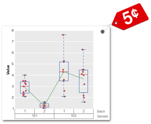

fivecentplots¶
Making multi-factor & multi-axes Matplotlib manipulations more manageable
Overview¶
Why another plotting library?¶
Given that there is no shortage of quality Python plotting packages on the world wide web (matplotlib, bokeh, seaborn, etc.), it is fair to ask why we need another. The answer is simple: you may not; I do. fivecentplots exists to make generation, customization, and automation of certain types of plots (i.e., facet grids with row and/or column grouping; boxplots with factor grouping labels; etc.) easier.
What issues does fivecentplots solve?¶
Simplified syntax:
All input parameters are specified as optional keyword arguments of one function call (for each plot type). As an example, to generate an x-y plot with x and y labels, a plot title, and a legend in matplotlib, you would need at least five lines of code. With fivecentplots, you would need a single function call with five arguments.
Easy and repeatable look and feel:
fivecentplots makes it easy to style plots with custom colors, sizes, marker themes, etc., and automate plot generation. Unlike matplotlib which sets a size for the entire figure and adjusts elements to fit, fivecentplots starts with a fixed size for the plot window and allows the figure size to grow as needed to accommodate the contents. This promotes consistency from plot to plot and eliminates the need to envoke matplotlib routines like
tight_layoutwhich sometimes has unexpected results.
Simplified visualization of pandas DataFrames:
fivecentplots is built to process multi-factor pandas DataFrames. Keyword arguments make it easy to legend a plot by another column or to group multiple plots in rows and/or columns based on other DataFrame columns. It also accepts a conditional string to filter the DataFrame before plotting.
Boxplots with grouping labels:
Although matplotlib supports boxplot generation, it is not easy to group data into labeled, multi-factor subgroups. Borrowing inspiration from the variability chart in JMP, fivecentplots extends matplotlib’s boxplot routine to make this possible.